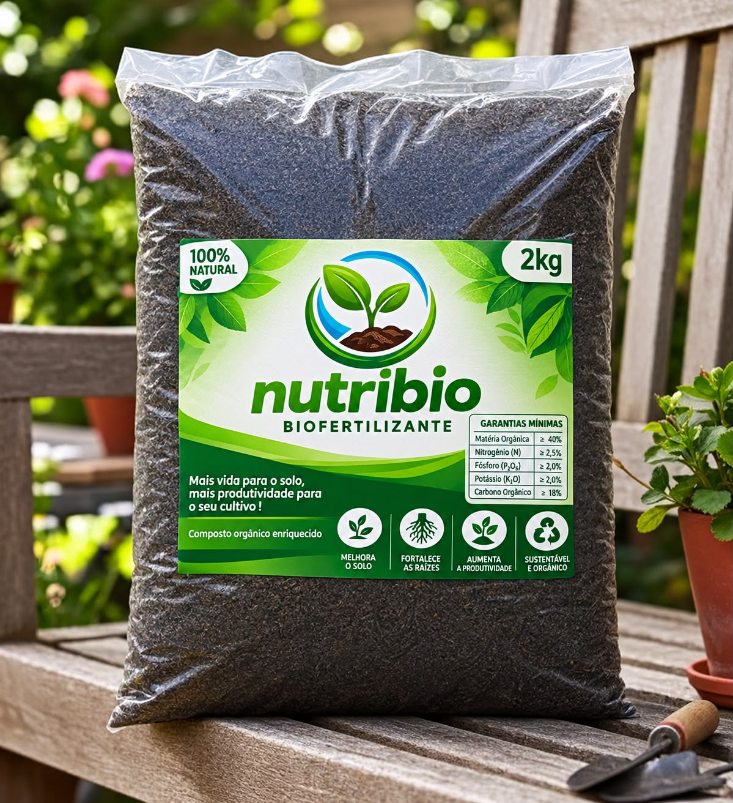

COMPOSTO ORGÂNICO

2 kgCUIDADO COM O SOLO
Nutri Bio Biofertilizante Sólido
Biofertilizante sólido é uma fórmula inovadora para quem busca soluções para grandes quantidades. Tem uma fórmula de fermentação mais rápida e age mais rápido na planta.
Aplicação foliar: 5% — 500 ml para 10 L. Consulte a equipe para o preparo da apresentação sólida.
Preço sob consulta